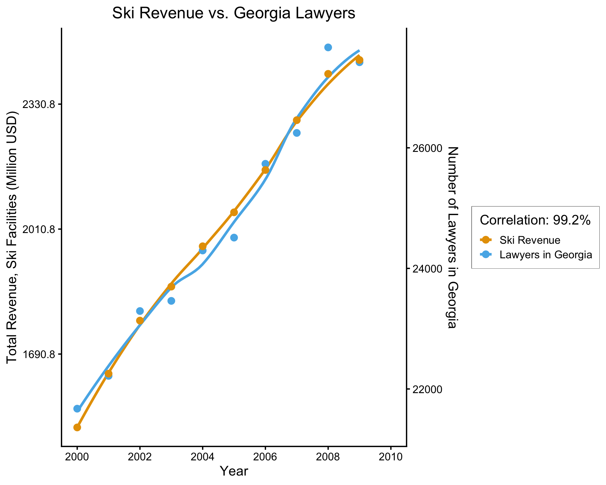

Week 6: Causality in Ethics and Policy
DSAN 5450: Data Ethics and Policy
Spring 2024, Georgetown University
Wednesday, February 21, 2024
Recap / Eureka Moment (for Midterm Prep Purposes)
- I totally forgot to mention: John Stuart Mill, the progenitor of what we today identify as utilitarianism, was himself tortured mercilessly, by his father John Mill (bffs with Jeremy Bentham) for the “greater good of society”!

Blasting Off Into Causality!

DGPs and the Emergence of Order
- Who (besides Aaron) can guess the state of this process after 10 steps, with 1 person?
- 10 people? 50? 100? (If they find themselves on the same spot, they stand on each other’s heads)
- 100 steps? 1000?

“Mathematical/Scientific Modeling”
- Thing we observe (poking out of water): data
- Hidden but possibly discoverable through deeper investigation (ecosystem under surface): model / DGP

What Is To Be Done?

Selecting on the Dependent Variable

What “““research”“” “““says”“” about identifying people who might commit mass shootings
- Jeff’s rant: If you care about actually solving social issues, this should infuriate you